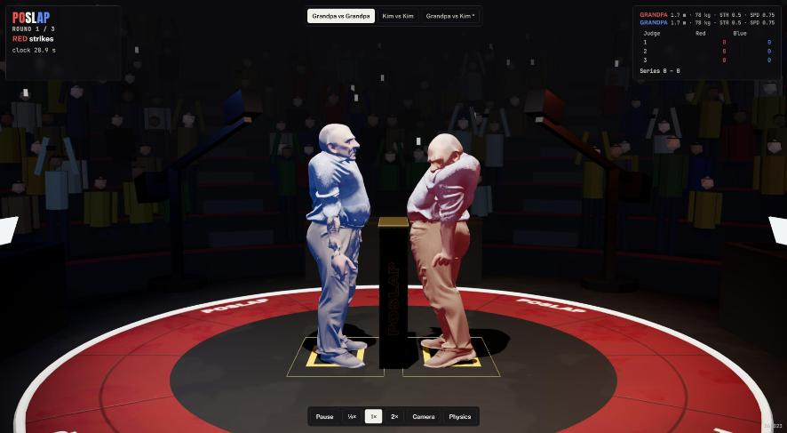
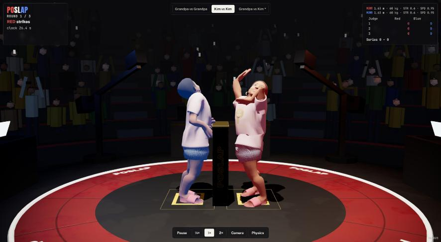

Before: one fixed matchup, Grandpa vs Kim, on older brains (Grandpa's lean10 and Kim's pre-L4). After: a picker at the top: Grandpa vs Grandpa (the default) and Kim vs Kim run both corners on the brains that graduated L4 (self-play), defenders absorbing; Grandpa vs Kim keeps the older brains and is marked "never trained together: expect falls", because the L4 brains only sparred against their own double. Each choice is a link (?m=gg, ?m=kk, ?m=gk).

